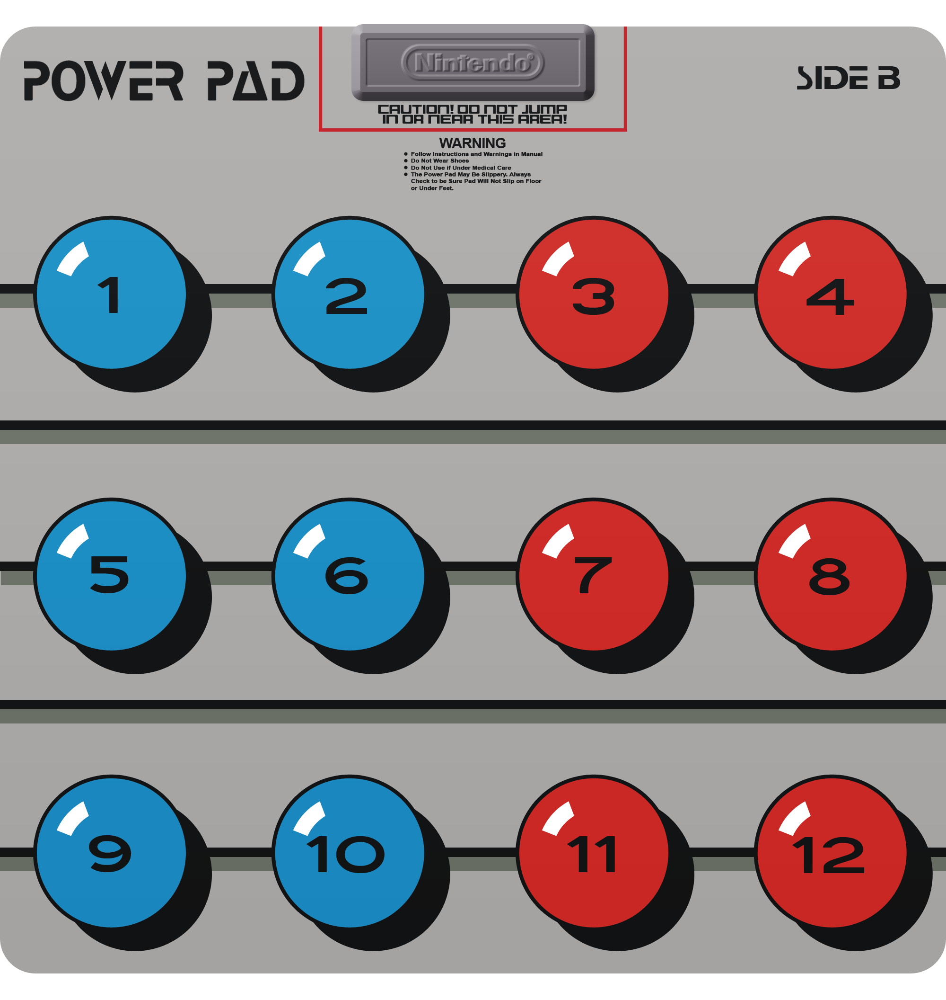
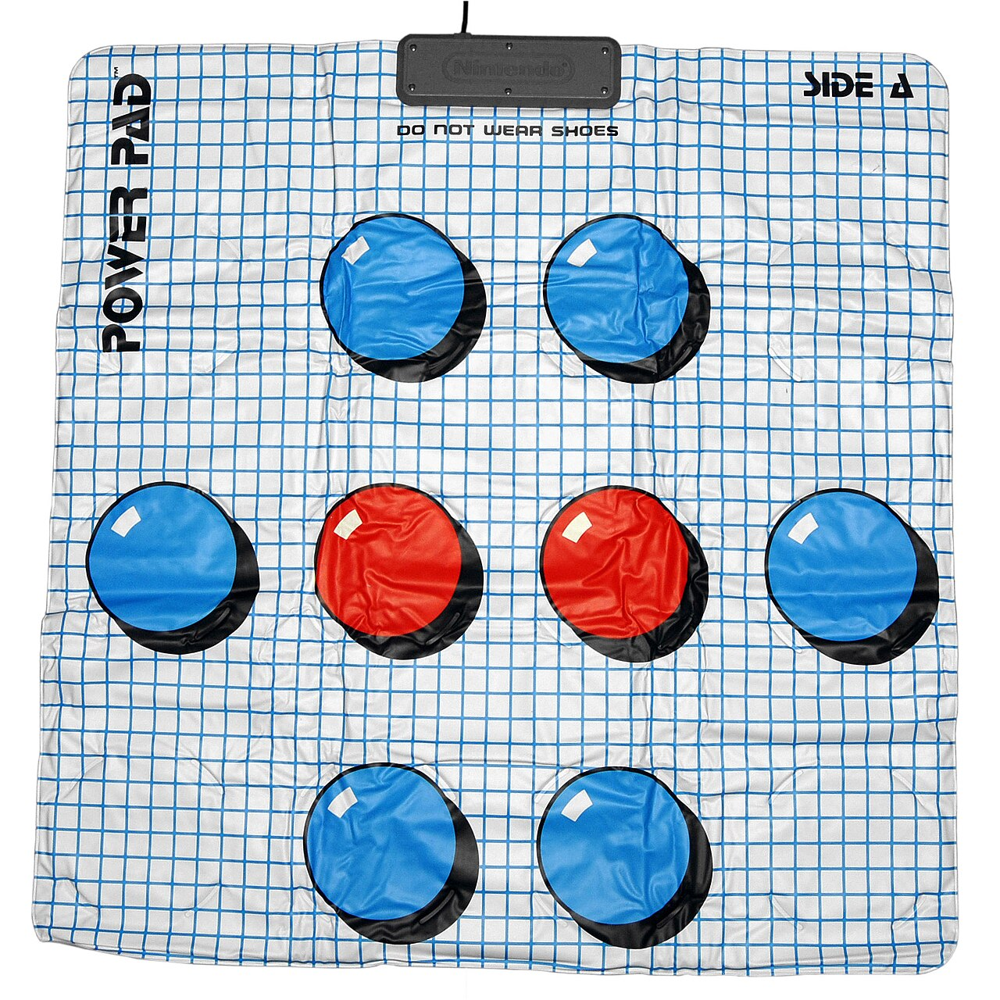

NES Power Pad (Family Trainer / Family Fun Fitness)
The first mass-market full-body exertion interface for home video games — run, jump, stomp.

Overview
The NES Power Pad was a full-body floor mat controller for the Nintendo Entertainment System, originally developed by Bandai as the Family Trainer for the Famicom in Japan (November 1986). Released briefly in North America as 'Family Fun Fitness' in 1987, the rights were purchased by Nintendo in 1988, rebranded as the Power Pad, and bundled with the NES Power Set console package alongside the game World Class Track Meet. It was also released in Europe as Family Fun Fitness in June 1988.
The mat unfolded to approximately 94 cm × 97 cm (37 × 38 inches) and featured two sides: Side A with 8 pressure zones (rarely used) and Side B with 12 pressure zones arranged in a 3×4 grid, numbered 1–12. Each zone contained a simple binary pressure-sensitive switch — no analog pressure measurement, just on/off. The mat connected to the NES controller port (typically port 2) and communicated via a serial protocol using two dedicated data lines, read at the NES's standard 60 Hz polling rate during vertical blanking intervals.
Players stood on the mat barefoot or in socks and controlled games by running in place, jumping, and stepping on specific numbered zones. Eleven official games were released across all regions (six in North America), spanning athletic simulations (World Class Track Meet, Athletic World), rhythm/dance (Dance Aerobics — the acknowledged precursor to Dance Dance Revolution), team relay events (Super Team Games), and memory/action challenges (Short Order / Eggsplode!). The Power Pad sold approximately 500,000 units in North America — modest for the NES's 34-million install base, but enough to establish an entire new genre of interaction.
Deep dive
Bandai, the Japanese toy and game company, developed the Family Trainer mat and the first ten games for the Famicom, with software by Human Entertainment. It launched in Japan on November 12, 1986. Bandai released it briefly in North America as 'Family Fun Fitness' in 1987 before Nintendo purchased the North American rights, rebranded it as the Power Pad, and recalled remaining Family Fun Fitness mats from stores. The recalled launch title Stadium Events — of which only about 200 copies had reached retail shelves before the rebrand to World Class Track Meet — is now the rarest licensed NES game in existence; sealed copies have sold for over $41,000 at auction.
The Power Pad consisted of two layers of flexible gray vinyl-like plastic with 12 pressure-sensitive switches embedded between them. Each switch completed an electrical circuit when compressed by foot pressure, reading as a simple binary on/off — no analog pressure measurement. The mat used a non-slip surface and was designed for barefoot or socked use with deliberate step thresholds (light incidental contact was ignored). Connection was via a standard NES controller cable with a 6-wire protocol using two dedicated data lines (D3 and D4), unlike the standard controller's single data line. Software mapped the 12 zones to standard NES controller inputs (D-pad directions, A/B buttons, etc.), with different games using different mappings. Side A (8 zones) was almost never used; Side B (12 zones, numbered 1–12) was the standard for nearly every game.
The Power Pad asked players to use their whole body as input. In World Class Track Meet, players ran in place by rapidly alternating steps between two zones to complete 100m dash, hurdles, long jump, and triple jump events — racing against AI opponents named after animals (Turtle = slowest, Cheetah = fastest). Dance Aerobics (1987 in Japan) featured an instructor-led rhythm mode and a 'free form mode' where players could compose their own melodies by tapping out notes on the mat, arguably making it the first home music-creation game. Super Team Games supported up to six players simultaneously sharing zones for relay races, crab walks, and tug-of-war — an early example of collaborative multi-body input on a single device. Athletic World (1986) asked players for their name, age, gender, and date to provide 'customized advice,' anticipating Wii Fit's health tracking by 22 years. Kids quickly discovered a classic ergonomic exploit: kneeling and slapping the mat with hands was faster than running in place.
The Power Pad sold approximately 500,000 units in North America (per David Sheff's Game Over, 1994). It was modestly successful as a novelty accessory but ultimately limited by a very small game library (only 6 North American titles, all released by 1989), lack of third-party developer support, and the mat's tendency to wear and delaminate over time. It competed with the standard controller's precision and was retired by the early 1990s as the NES era wound down. Nintendo never released a Power Pad successor for the SNES (though the Exertainment Life Cycle exercise bike was a spiritual successor that failed even more spectacularly). A Power Pad unit is now part of the permanent collection at the Science Museum, London.
The Power Pad's HCI significance is hard to overstate. It was the first mass-market full-body home controller — proof that feet and whole-body movement could be a viable consumer input modality. It pioneered the exergaming genre, explicitly reframing video games as fitness tools in an era when gaming was seen as purely sedentary. Ian Bogost's seminal 2005 paper 'The Rhetoric of Exergaming' uses the Power Pad as its starting point. It is the direct conceptual ancestor of Dance Dance Revolution (1998, Konami), the Wii Fit Balance Board (2008, Nintendo), Microsoft Kinect (2010), and the entire genre of motion-based gaming. J.A. McArthur wrote in 100 Greatest Video Game Franchises (2017): 'As a video game franchise, Bandai's Family Trainer was widely considered a flop. However, as a stepping-stone toward personal use of motion capture devices, Family Trainer nourished a generation of thought surrounding the performance of bodily motion and its role in video games.' In 2013, developer Archie Prakash connected a Power Pad to a PC via Arduino for its 25th anniversary, building what he called the 14th game ever made for the peripheral.
Team & pioneers
- Bandai Co., Ltd.. Japanese toy and game company that originally developed the Family Trainer mat and the first ten games for the Famicom (1986).
- Human Entertainment. Japanese game developer that created the software for the first ten Family Trainer titles.
- Nintendo of America. Acquired North American rights from Bandai in 1988, rebranded the mat as the Power Pad, and published additional titles including World Class Track Meet, Dance Aerobics, and Short Order / Eggsplode!
Media

Sources
- Power Pad - Wikipedia
- Family Trainer - Wikipedia
- Power Pad - Science Museum Group Collection
- NESdev Wiki — Power Pad technical protocol
- Ian Bogost — 'The Rhetoric of Exergaming' (2005)
- Game Developer — 'Connecting NES Power Pad to PC for its 25th Anniversary'
- J.A. McArthur — 'Family Trainer — 100 Greatest Video Game Franchises'